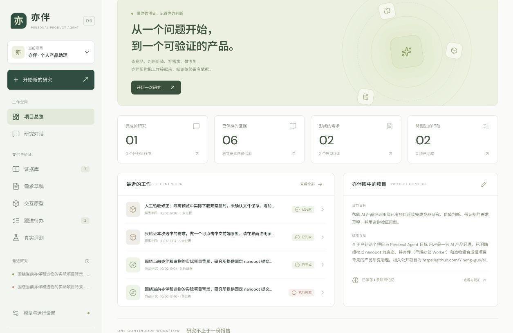

亦伴 PERSONAL PRODUCT AGENT · v0.5
从研究到可验证的产品
懂项目背景，判断有据可查。
亦伴连接 nanobot 与造物，把项目背景、研究、证据、需求、原型和待办放在同一条工作流里。下面是同一条已保存案例的六步实拍。
公开演示无需登录，也不调用模型。截图来自 2026-10-02 的本机 v0.5；研究使用固定 Git 文档快照。可点击原型使用示例业务数据和显式关联规则，不代表线上 AI 服务或自动语义判断。
1 · 项目背景
项目目标、背景、约束和已确认记忆汇总在同一个入口；确认记忆可以纠正、停用和追溯历史。此案例保存了 1 条确认记忆。

真实页面实拍 · 图片不会执行研究操作打开原图
先试一次依据变化复核。
在原型中模拟背景修改、记忆纠正或停用，查看关联对象和无关对照，填写人工复核理由，导出本地 JSON。数据只保存在你的浏览器或本页内存中。